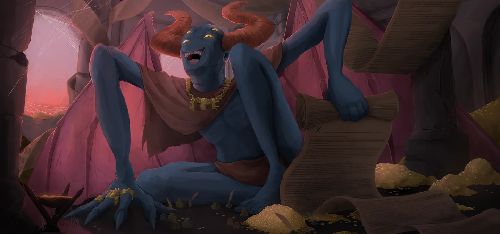

Vakuu — Le Premier Démon
Patch de Référence :
v0.111.0 Beta(Dernier patch officiel) Acte d'apparition : Acte 3 Déblocage (Epoch) :NoneThème Visuel / Couleur :#3C1931
🎨 Portraits & Illustrations
| Icône Ancien | Illustration Principale |
|---|---|
 |
🎮 Intégration Visuelle GBA (Butano)
- Palette suggérée pour la GBA : Teinte dominante
#3C1931. À mapper sur une palette 16 couleurs (15 couleurs + transparent) pour le BG de portrait. - Dimensions portrait GBA : 64x64 pixels (mode 4 bpp tilemap) positionné à
(X: 16, Y: 24)sur l'écran 240x160. - Couleur des boutons / encadrements UI :
rgba(13, 15, 31, 0.8)converti en code couleur GBA 15-bit BGR555.
📜 Rôle & Lore dans l'Ascension
🎲 Règles des Slots & Choix
- Nombre total d'options : 10 reliques disponibles.
- Structure des tirages : 3 slot(s).
- Slot #1 : 1 choix parmi 3 reliques présentées.
- Slot #2 : 1 choix parmi 3 reliques présentées.
- Slot #3 : 1 choix parmi 4 reliques présentées.
🏆 Catalogue Complet des Reliques (Classées par Tier)
⭐ Tier S (2 reliques)
 Cape distinguée (
Cape distinguée (DISTINGUISHED_CAPE)
- Tier :
S| Rareté :Ancient - Description : Ajoutez 2 Malédictions aléatoires et 3 Apparitions à votre Deck.
- Implémentation GBA C++ : Mécanique de Deck : Ajoute
Apparition(APPARITION) au deck du joueur lors de la sélection. Nécessite l'enregistrement de l'ID de carte dansCardPool.
Cartes Dérivées / Associées :
 Apparition (
Apparition (APPARITION) — Compétence (Coût :1⚡)- Effet de base : Éthéré. Gagnez Intangible (1). Épuisement.
- Effet amélioré : Gagnez Intangible (1). Épuisement.
- Amélioration :
keywordsRemoved: ['Ethereal']
 Masque serti (
Masque serti (JEWELED_MASK)
- Tier :
S| Rareté :Ancient - Description : Au début de chaque combat, placez un Pouvoir aléatoire de votre Pioche dans votre Main. Il coûte 0 ce combat.
- Implémentation GBA C++ : Effet Majeur Prioritaire : À implémenter en priorité dans le prototype MVP en raison de son fort impact stratégique.
⭐ Tier A (3 reliques)
 Boucle d'oreille susurrante (
Boucle d'oreille susurrante (WHISPERING_EARRING)
- Tier :
A| Rareté :Ancient - Description : Gagnez ⚡1⚡ au début de chaque tour. Vakuu joue votre premier tour à votre place.
- Implémentation GBA C++ : Effet Passif : Hook standard dans
RelicManageravec écouteur d'événement (ON_COMBAT_START,ON_TURN_START, etc.).
 Brouillard en conserve (
Brouillard en conserve (PRESERVED_FOG)
- Tier :
A| Rareté :Ancient - Description : Retirez 3 cartes de votre Deck. Ajoutez Hubris à votre Deck.
- Implémentation GBA C++ : Effet Passif : Hook standard dans
RelicManageravec écouteur d'événement (ON_COMBAT_START,ON_TURN_START, etc.).
 Embarras du choix (
Embarras du choix (CHOICES_PARADOX)
- Tier :
A| Rareté :Ancient - Description : Au début de chaque combat, ajoutez 1 carte parmi 5 cartes aléatoires à votre Main. Ajoutez Retenue à la carte choisie.
- Implémentation GBA C++ : Effet Passif : Hook standard dans
RelicManageravec écouteur d'événement (ON_COMBAT_START,ON_TURN_START, etc.).
⭐ Tier B (2 reliques)
 Serre desséchée (
Serre desséchée (SERE_TALON)
- Tier :
B| Rareté :Ancient - Description : Perdez 9 PV Max. Ajoutez 3 Vœux à votre Deck.
- Implémentation GBA C++ : Mécanique de Deck : Ajoute
Vœu(WISH) au deck du joueur lors de la sélection. Nécessite l'enregistrement de l'ID de carte dansCardPool.
Cartes Dérivées / Associées :
 Vœu (
Vœu (WISH) — Compétence (Coût :0⚡)- Effet de base : Placez une carte de votre Pioche dans votre Main. Épuisement.
- Effet amélioré : Retenue. Placez une carte de votre Pioche dans votre Main. Épuisement.
- Amélioration :
keywords: ['Retain']
 Boîte à musique (
Boîte à musique (MUSIC_BOX)
- Tier :
B| Rareté :Ancient - Description : Vous créez une copie Éthérée de la première Attaque que vous jouez chaque tour.
- Implémentation GBA C++ : Effet Passif : Hook standard dans
RelicManageravec écouteur d'événement (ON_COMBAT_START,ON_TURN_START, etc.).
⭐ Tier C (1 relique)
 Rose sanguinolente (
Rose sanguinolente (BLOOD_SOAKED_ROSE)
- Tier :
C| Rareté :Ancient - Description : Ajoutez 1 Assuétude à votre Deck. Gagnez ⚡1⚡ au début de chaque tour.
- Implémentation GBA C++ : Effet Passif : Hook standard dans
RelicManageravec écouteur d'événement (ON_COMBAT_START,ON_TURN_START, etc.).
⭐ Tier D (2 reliques)
 Violon (
Violon (FIDDLE)
- Tier :
D| Rareté :Ancient - Description : Au début de chaque tour, piochez 2 cartes supplémentaires. Vous ne pouvez plus piocher de cartes pendant votre tour.
- Implémentation GBA C++ : Effet Passif : Hook standard dans
RelicManageravec écouteur d'événement (ON_COMBAT_START,ON_TURN_START, etc.).
 Parasol seigneurial (
Parasol seigneurial (LORDS_PARASOL)
- Tier :
D| Rareté :Ancient - Description : Lorsque vous passez chez le Marchand, vous obtenez immédiatement TOUT ce qu'il propose.
- Implémentation GBA C++ : Effet Passif : Hook standard dans
RelicManageravec écouteur d'événement (ON_COMBAT_START,ON_TURN_START, etc.).
💬 Dialogues & Répliques
Les dialogues s'affichent dans la boîte de dialogue inférieure (240x40 px) sur la GBA avec défilement fluide au bouton A :
🗣️ Première Rencontre (Toutes runs confondues)
- 👑 Ancien :
Offre-moi ton âme, et tous te craindront comme ils me craignent...
🗣️ Soldat de Fer (Ironclad)
-
👑 Ancien :
Après si longtemps, nous nous retrouvons...
-
👤 IRONCLAD :
DÉMON SACRÉ !
Que m'as-tu fait !? -
👑 Ancien :
Ni plus ni moins que le marché que nous avons conclu.
-
👑 Ancien :
Les clans que tu as anéantis pèsent-ils sur ton âme...?
Vakuu rit aux éclats. -
👑 Ancien :
Ma plus grande marionnette... pourquoi n'as-tu pas encore tué l'Architecte ?
-
👤 IRONCLAD :
Après avoir tué l'Architecte, c'est TOI que je tuerai !
-
👑 Ancien :
Baîllement
J'ai hâte de te regarder échouer.
🗣️ La Silencieuse (Silent)
-
👑 Ancien :
Meurtrière.
-
👤 SILENT :
...
-
👑 Ancien :
Ça finira mal pour toi.
-
👑 Ancien :
Vakuu montre à la Silencieuse son étalage de contrats.
-
👑 Ancien :
L'Architecte ne suffira pas, tu dois tuer tes sœurs également !
-
👤 SILENT :
...
-
👑 Ancien :
Pas besoin des mots. Nous sommes pareils, toi et moi.
🗣️ Le Défectueux (Defect)
-
👑 Ancien :
Petit être brisé, laisse-moi te parfaire.
-
👑 Ancien :
Ne trouves-tu pas étrange que tes camarades les assemblages veuillent ta perte ?
-
👑 Ancien :
Apporte-moi le cœur de l'Architecte, et je rétablirai ton compagnon.
-
👤 DEFECT :
-
👑 Ancien :
Qui est plus important ? Ton créateur, ou ton ami ?
🗣️ Le Régent (Regent)
-
👑 Ancien :
Un habitant des étoiles ? À l'intérieur de ces murs maudits ?
-
👤 REGENT :
Vous avez entendu parler de moi ?
-
👑 Ancien :
Oui, je crois que nous pouvons nous aider mutuellement.
-
👑 Ancien :
Je peux t'octroyer encore plus de pouvoir, en échange de quelque prix.
-
👤 REGENT :
Je ne sais pas si c'était une bonne affaire. Je ne me sens pas très bien...
-
👑 Ancien :
Tu as bien lu les contrats, pourtant ?
Tu les as bien signés, volontairement, et en toute connaissance de cause ? -
👑 Ancien :
Ne tiendras-tu alors pas ta part de notre accord ?
Un autre contrat sinon ? Oui, ça va mieux maintenant, n'est-ce pas ?
🗣️ La Nécrolieuse (Necrobinder)
-
👑 Ancien :
Nous sommes tous deux en quête de vengeance. Mais il faudra en payer le prix.
-
👤 NECROBINDER :
J'en paierai le prix. N'importe quel prix pour sa mort.
-
👑 Ancien :
Je sais où vous avez eu cette Main.
-
👑 Ancien :
L'Architecte nous a grièvement lésés, tous deux.
-
👤 NECROBINDER :
Allons-y, démon. Montrez-moi les contrats que nous pouvons conclure.
-
👑 Ancien :
Tu ne perds pas de temps. Très bien...
🗣️ Générique (Tout Personnage)
-
👑 Ancien :
Comme ça, tu cherches à atteindre la gloire ? J'ai quelques propositions pour toi...
-
👑 Ancien :
{Visits}. {Visits} fois que tu passes ici.
-
👑 Ancien :
Tu as bien compris que ça ne finira jamais ?
⬅️ Retour au Sommaire de la Bible | ⚙️ Spécifications Techniques GBA